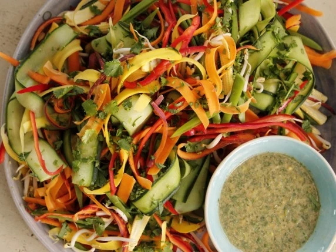

Home
Asian Ribbon Salad

Description
This mouth-watering recipe is ready in just 10 minutes and the ingredients detailed below can serve up to 8 people.
Ingredients
- 4 large/8 small rainbow carrots, sliced into ribbons
- 2 large cucumber, sliced into thin ribbons
- 4 pimento red pepper, sliced into thin ribbons
- 200g baby corn, halved lengthways, sugar snaps
- 100g coriander, roughly chopped
Steps
- Layer the salad ingredients on a platter.
- Mix the dressing ingredients in a jar and shake well.
- Serve dressing on the side.
- Serve the dish with chopsticks.